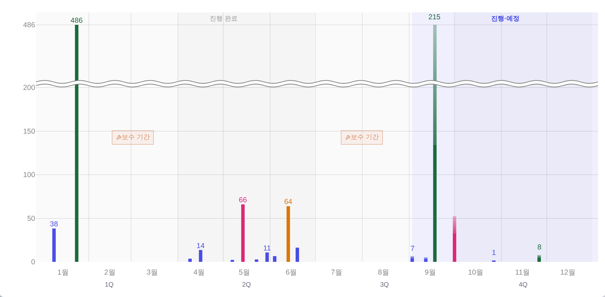
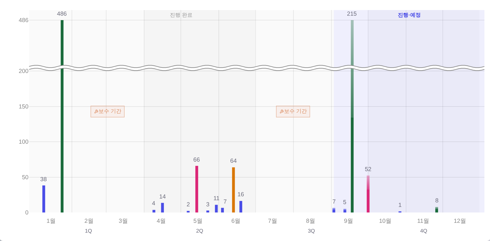
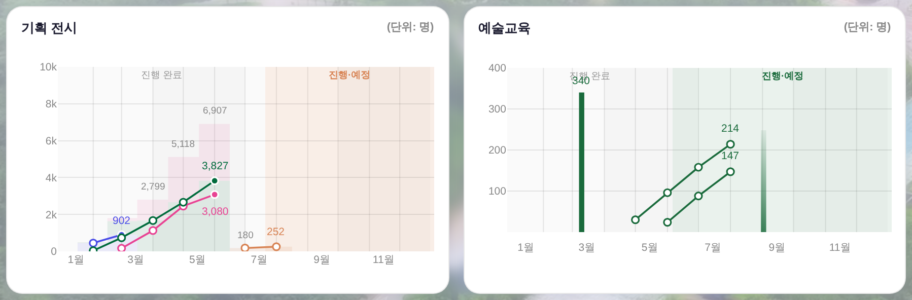

기획 공연 차트 — 값 라벨 「한 벌」 전후
지시(운영자 260809) 「차트 위에 그라데이션 포함해서, 각각 다 숫자 간격이 다르거든? 그 부분 해결해주고,
모든 올라와 있는 차트가 다 숫자가 나오게 해줘 · 숫자는 색이 각기 다른 게 아니라, 조금 흐린 검정으로」 ·
대상 = _bizDrawSalesBars(기획 공연 · 예술교육 막대) · 화면 = 커밋된 스냅샷 목데이터 ?qa=admin 1920×1080 ·
실측 = tools/scratch/probe_barlabel.mjs · 실API·PII 미접촉.
1. 원인 — 같은 뜻의 숫자를 두 기구가 그리고 있었다
막대 위 숫자는 Plotly 막대 텍스트(textposition:'outside')로, 그라데이션(예상 2단) 칸과 교육 막대의 숫자는
주석(annotation · yshift:3)으로 그리고 있었다. 기구가 둘이면 간격도 둘이 된다 — 실측 Δ0.00px ↔ Δ5.04px.
겹침은 x 29px 하나만 보고 판단해 작은 숫자를 지웠고(y는 안 봤다), 잉크는 막대색을 그대로 받아 4갈래였다.
| 축 | 전 | 후 | 고친 방식 |
|---|---|---|---|
| 숫자 그리는 기구 | 2가지 | 주석 1가지 | 막대 텍스트 폐지 → 전부 주석(교육이 260805부터 쓰던 그 기구) |
| 막대 꼭대기 ↔ 숫자 간격 | Δ 5.04px | Δ 0.9px | 세로 간격 = _BIZ_LAB_DY 한 값(남은 0.9px = 서브픽셀 반올림 몫) |
| 값이 있는데 숫자 없는 막대 | 6개 | 0개 | 겹치면 지우지 않고 가로로 비킨다(_bizLabFit) |
| 화면에 뜬 숫자 | 10개 | 17개 | x·y 글상자로 실제 겹칠 때만 비킴 판정 |
| 숫자 잉크 | 4갈래 | 1갈래 | --neutral-text #6B6B7B(중립 사다리 한 단 · 새 색 0) |
| 숫자끼리 포갬 | 0쌍 | 0쌍 | 비켜 세우고도 안 겹친다(게이트가 이 축도 잰다) |
2. 기획 공연 — 전 / 후
전: 1·5·6·9월의 작은 막대들이 숫자 없이 서 있고, 그라데이션 칸의 숫자(215·8)만 다른 간격으로 떠 있다. 후: 서 있는 막대 전부에 숫자가 붙고(4·2·3·7·16·5·52 신규), 간격은 한 벌, 색은 흐린 검정 하나.


3. 예술교육 반쪽 — 같은 함수라 같이 바뀐다
교육 막대 숫자(340)도 같은 한 벌로 들어온다 — 잉크만 그린 → 흐린 검정. 자리·값·툴팁은 무접촉.


4. 게이트 — 되돌아가면 막힌다
tools/smoke_bizchart.mjs에 계약 ⑤를 증설했다(기존 4종 → 5종). 킬테스트 = 직전 머지본(ed8325e) index.html으로 돌리면 rc=1.
- ⑤ⓐ 막대 트레이스 텍스트로 그린 값 라벨 0개(기구 한 벌) — 되돌리면 「값 라벨 4개」로 잡힌다
- ⑤ⓑ 막대 꼭대기↔숫자 세로 간격 Δ ≤ 1.5px — 되돌리면 「5.49px」
- ⑤ⓒ 값이 있는데 숫자 없는 막대 0개 — 되돌리면 「9개」
- ⑤ⓓ 값 라벨 잉크 1갈래 — 되돌리면 「4갈래」
- ⑤ⓔ 숫자끼리 포갬 0쌍 — 「다 보이게」의 반대편 축
npm run check 전건 rc=0 · smoke_layout PASS · check_break_rule PASS(발동 7/미발동 9/오발동 0) · pageerror 0.